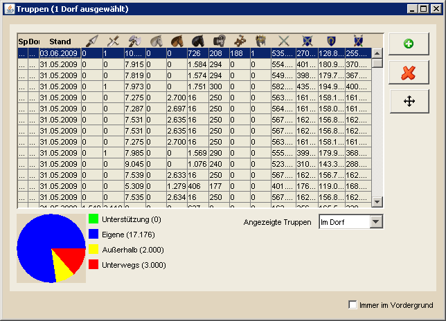

| |
Truppenübersicht |
| |
|  |
| |
Die Truppenübersicht zeigt die Anzahl der Truppen pro Dorf, nachdem diese Information aus dem Spiel nach DS Workbench importiert wurden. Die Spalte "Spieler" dient dabei dem Fall, dass man von mehreren Spielern die Truppeninformationen erhalten hat, z.B. freiwillig von Mitgliedern des eigenen Stammes oder durch den Import von Spähberichten. Die Spalte "Stand" gibt das Datum an, wann die gezeigten Informationen von DS Workbench gelesen wurden.
Die folgenden Spalten enthalten die Anzahl des jeweiligen Truppentyps, die sich anschließenden vier Spalten zeigen die Kampfkraft der Truppen eines Dorfes sowohl in der Offensive, als auch in der Defensive gegen Kavallerie und Bogenschützen.
Die letzten beiden Spalten zeigen an, wieviele Dörfer von dem jeweiligen Dorf unterstützt werden (rotes Symbol) bzw. aus wievielen Dörfern Unterstützung in diesem Dorf steht (grünes Symbol). Werte für diese Spalten sind nur eingetragen, wenn man neben den Truppeninformationen noch die Übersicht über die Unterstützungen importiert hat.
Die letzte Spalte zeigt den Füllstand des Bauernhofes. Ausgegangen wird hier von 24.000 Bauernhofplätzen, ein Wert von etwa 85% stellt hier das Maximum dar, da Gebäude nicht berücksichtigt werden.
Auf der rechten Seite befindet sich das Menü mit den folgenden Funktionen:
- Bearbeiten
- Truppeninformationen hinzufügen: Erlaubt es, manuell Truppeninformationen zu einem eigenen oder einem gegnerischen Dorf hinzuzufügen. Die einzelnen Einheiten können im Anschluss direkt in der Tabelle bearbeitet werden.
- Übertragen
- Zentrieren im Browser: Zentriert das gewählte Dorf im Browser.
- Versammlungsplatz im Browser öffnen: Öffnet den Versammlungsplatz des gewählten Dorfes im Browser.
- Zentrieren in DS Workbench: Zentriert das gewählte Dorf auf der DS Workbench Hauptkarte
- Sonstiges
- Unterstützungen auffüllen: (siehe unten "Sonderfunktionen")
- Information zu Unterstützungen: Zeigt detailierte Informationen über die gewählte Unterstützunge an. Diese Funktion ist nur im Tab "Unterstützungen" verfügbar. Weiterhin ist eine grafische Darstellung von Unterstützungen verfügbar (siehe unten "Sonderfunktionen")
|
| |
Shortcut-Funktionen |
|
|
- BB-Export per STRG+B: Per STRG+B ist es möglich, die gewählten Truppen als BB-Codes in die Zwischenablage zu kopieren. Von dort können sie per STRG+V z.B. im den Notizen im Spiel eingefügt werden.
- Entfernen von Einträgen per ENTF: Erlaubt es markierte Einträge per ENTF zu löschen. Dabei wird DS Workbench nachfragen, ob nur die Truppen aus der momentan gewählten Truppenübersicht (Im Dorf, Eigene...) gelöscht werden sollen oder die Truppen für dieses Dorf in allen Übersichten.
- Suche per STRG+F: Erlaubt es nach Dörfern mit Truppeninformationen zu suchen, die sich in einer bestimmten Gruppe befinden.
|
| |
Sonderfunktionen |
| |
 |
| |
Mit der Funktion "Unterstützungen auffüllen" habt ihr die Möglichkeit, den Angriffsplaner für die Planung von Unterstützungen zu verwenden. Wählt dafür im Tab "Unterstützungen" ein unterstütztes Dorf aus, bei welchem ihr die Truppen auffüllen wollt. Klickt dann auf den entsprechenden Button im Menü und es erscheint der oben sichtbare Dialog. Hier tragt ihr die Gesamtanzahl der Truppen ein, die im Dorf stehen sollen. Weiterhin tragt ihr die Anzahl der Truppen ein, die in einem Unterstützungsbefehl zum Ziel laufen sollen. Kleine Truppenmengen bedeuten dabei, dass eure Verteidigung bei einem Totalverlust schnell wieder aufgebaut ist, auch wenn es auf den ersten Blick mehr Arbeit macht sie zu verschicken. Klickt ihr nun auf "Übernehmen", so wird das gewählte Dorf im Angriffsplaner als Ziel eingetragen und es werden soviele "Angriffe" zugewiesen wie Unterstützungsbefehle notwendig sind, um die gewählte Gesamtanzahl an Truppen zu erreichen.
Wie ihr im Angriffsplaner für die Herkunftsdörfer weiter vorgeht erfahrt ihr auf der entsprechenden Hilfeseite. Ebenso ist dort das Splitten von Angriffen beschrieben, was ihr benötigt, um entsprechend kleine Truppenbewegungen zu erzielen. |
| |
 |
| |
Wählt ihr im Tab "Unterstützungen" einen oder mehrere Einträge aus, so werden die Herkunftsdörfer bzw. die Ziele auf der Hauptkarte grafisch dargestellt. Hierbei gelten die folgenden Zeichenregeln:
- Eingehende Unterstützungen, bei denen nur das Zieldorf sichtbar ist, werden als grüne Linie gezeichnet. Zudem wird die Entfernung in Feldern zum Herkunftsdorf angezeigt.
- Ausgehende Unterstützungen, bei denen nur das Herkunftsdorf sichtbar ist, werden als rote Linie gezeichnet. Zudem wird die Entfernung in Feldern zum Herkunftsdorf angezeigt.
- Unterstützungen, bei denen Herkunft und Ziel sichtbar sind, werden gelb gezeichnet, wobei das Herkunftsdorf durch ein kleines Rechteck markiert ist
|
| |
|
Achtet besonders in der Truppenübersicht immer darauf, dass ihr aktuelle Truppeninformationen aus dem Spiel importiert habt, da es sonst leicht zu Verwirrungen kommen kann.
|
|
|